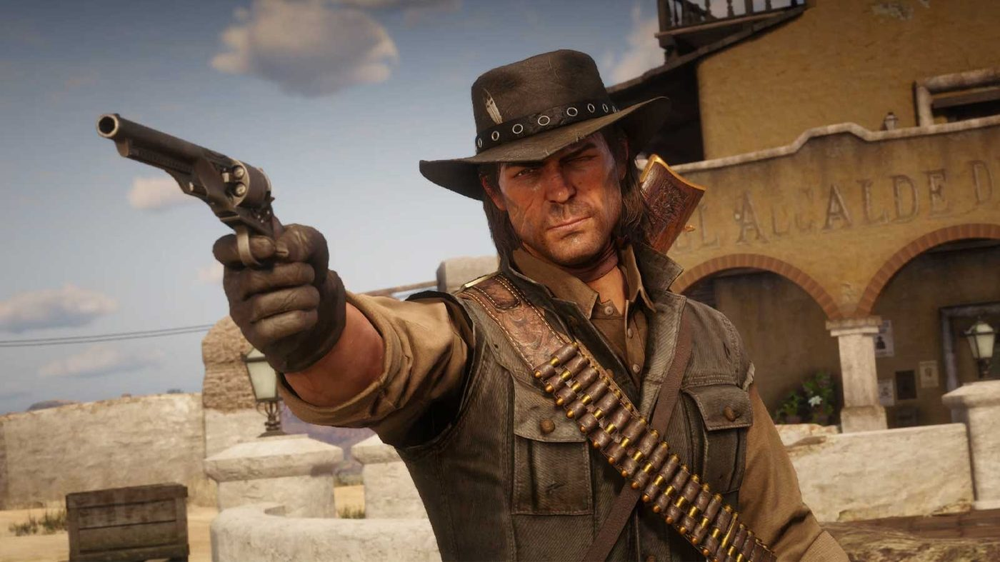

Actus · Communauté Nuevo Paraíso, le mod Mexique de RDR2 : son contenu et les règles de Rockstar Nuevo Paraíso: The Forgotten Frontier est un mod gratuit, réalisé par des fans, qui ajoute à Red Dead Redemption 2 sur PC le Mexique du premier Red Dead Redemption. Il est en ligne sur Nexus Mods depuis la mi-septembre 2026, soit une semaine après la publication par Rockstar de règles qui excluent ce type de projet. 5 octobre 2026 Par Joseph Lambert 4 min de lecture Le mod en bref Nom : Nuevo Paraíso: The Forgotten Frontier. Auteur : le moddeur Rixus724, avec une équipe baptisée Mexico Team. Plateforme : PC uniquement. Gratuit, disponible sur Nexus Mods. Sortie : annoncée pour le 16 septembre 2026. La page Nexus Mods indique une première mise en ligne le 17 septembre. Prérequis : Lenny's Mod Loader et Script Hook RDR2. Le Mexique n'est pas jouable dans Red Dead Redemption 2. La carte s'arrête au San Luis, le fleuve-frontière que John Marston traverse dans le premier jeu. Rockstar n'a jamais sorti de DLC scénarisé pour RDR2. Ce qu'il ajoute L'action se déroule en 1907, l'année de l'épilogue de RDR2. Le mod reconstruit les trois régions de Nuevo Paraíso du jeu de 2010 : Diez Coronas, Perdido et Punta Orgullo. GamingBible recense quatre villes restaurées : Escalera, Chuparosa, Casa Madrugada et Las Hermanas. Selon Screen Rant, chacune a ses habitants et leur routine quotidienne. Côté activités : chasses au trésor, chasse aux primes, défense de fort, attaques de train, service au bar, contrebande, courses en fiacre et travail à l'écurie. Une ligne de chemin de fer fonctionnelle relie New Austin à Nuevo Paraíso. Le mod ajoute aussi de nouvelles espèces animales, des repaires de gangs et des rencontres aléatoires. Une histoire jouable est consacrée à Sadie Adler. À la fin de RDR2, Sadie confie qu'elle pense partir pour l'Amérique du Sud. D'après Game Rant, on peut aussi jouer Arthur Morgan ou John Marston, Sadie restant le choix conseillé. Le lancement a connu des ratés. Screen Rant présente la version 1.2 comme plus stable mais allégée après les premiers problèmes, et des joueurs signalent des bugs sur la page Nexus Mods. GamingBible cite des joueurs qui parlent de « chef-d'œuvre » et de « meilleure extension pour RDR2 ».  John Marston dans l'une des villes reconstruites de Nuevo Paraíso. Le Mexique de Red Dead Redemption Dans le premier jeu, qui se passe en 1911, Nuevo Paraíso sert de cadre à l'acte II. Escalera est le fief du colonel Agustín Allende. Landon Ricketts passe sa retraite à Chuparosa. La rébellion menée par Abraham Reyes déchire la province au fil de l'acte. Le mod situe ces lieux quatre ans plus tôt, avant la guerre. Red Dead Redemption est lui-même vendu sur PC depuis le 29 octobre 2024. Les règles de Rockstar sur les mods, publiées en septembre 2026 Le 10 septembre 2026, Rockstar a mis en ligne sur son site une page de règles pour les mods (Mod Guidelines), à l'approche de la sortie de Grand Theft Auto VI le 19 novembre. Elles s'appliquent à GTA, à Red Dead Redemption et aux autres jeux du studio. Deux points concernent directement ce mod : un mod ne doit ni prolonger ni modifier les scénarios, missions, personnages ou la continuité officielle des jeux Rockstar ; un mod ne doit pas importer dans un jeu Rockstar les cartes, lieux, personnages, scénarios ou éléments d'un autre jeu Rockstar. Nuevo Paraíso fait entrer des lieux de Red Dead Redemption dans Red Dead Redemption 2, et écrit une nouvelle histoire pour un personnage existant. Le principe n'a rien de nouveau : dès 2017, la position de Take-Two sur les mods solo PC excluait déjà les projets reprenant la propriété intellectuelle d'autres jeux, y compris ceux de Rockstar. Rockstar ne s'est pas exprimé publiquement sur ce mod. Plusieurs médias, dont GamingBible, ont évoqué le risque d'un retrait. À l'heure où nous écrivons, la page du mod est toujours en ligne et aucun retrait n'a été signalé.